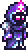
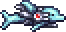
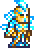
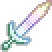

Itens
Nesta página serão apresentados alguns dos equipamentos mais avançados de cada classe disponíveis no
final da
progressão de Terraria.
Melee
Armadura:
Solar Flare armor
 Solar Flare armor
Solar Flare armor
-
Solar Flare Helmet -
Status
- Defense 24
- Slot corporal: Capacete
- Atributos: 26% aumentou a chance de ataque crítico corpo a corpo
Concede menor regeneração de vida
Inimigos são mais propensos a te atingir
- Solar Flare Breastplate -
Status
- Defesa 34
- Slot corporal: Camisa
- Atributos: 29% de dano corpo a corpo aumentado
Concede menor regeneração de vida
Inimigos são mais propensos a te atingir
- Solar Flare Leggings -
Status
- Defesa 20
- Slot corporal: Calças
- Atributos: 15% de aumento de movimento e velocidade corpo a corpo
Concede menor regeneração de vida
Inimigos são mais propensos a te atingir
Espada:
Zenith
 Zenith
Zenith
Status
- Dano: 190 (Melee)
- Knockback: 6.5 (Forte)
- Acerto crítico: 14%
- Velocidade: 32 (effective)
Magic
Armadura:
Nebula armor

Nebula armor
-
Capacete Nebulosa
Status
- Defesa: 14
- Slot corporal: Capacete
- Atributos: Aumenta o custo máximo de mana em 60 e 15% reduzido de mana
7% de dano mágico aumentado e chance de golpe crítico
-
Couraça Nebulosa
Status
- Defesa: 18
- Slot corporal: Camisa
- Atributos: 9% de dano mágico aumentado e chance de golpe crítico
-
Legging Nebulosa
Status
- Defesa: 14
- Slot corporal: Calças
- Atributos: 10% de dano mágico aumentado
10% de aumento da velocidade de movimento
Arma mágica:
Last Prism
 Last Prism
Last Prism
Status
- Tipo: Arma
- Dano: 100 (Mágico)
- Repulsão: 0,25 (Extremamente fraco)
- Mana: 12
- chance crítica: 4%
- Velocidade: 30
Ranged
Armadura:
Vortex armor
 Vortex armor
Vortex armor
-
Capacete Vórtice
Status
- Tipo: Armadura
- Defesa: 14
- Slot corporal: Capacete
- Atributos: 16% de dano à distância aumentado
7% aumentou a chance de ataque crítico de longo alcance
-
Couraça Vórtice
Status
- Tipo: Armadura
- Defesa: 28
- Slot corporal: Camisa
- Atributos: 12% aumentou o dano à distância e a chance de ataque crítico
25% de chance de economizar munição
-
Legging Vórtice
Status
- Tipo: Armadura
- Defesa: 20
- Slot corporal: Calças
- Atributos: 8% aumentou o dano à distância e a chance de ataque crítico
10% de aumento da velocidade de movimento
Arma:
S.D.M.G

S.D.M.G
Status
- Tipo: Arma
- Munição: Balas
- Damage: 85 (Ranged)
- Knockback: 2.5 (Muito fraco)
- Acerto crítico: 14%
- Velocidade de ataque: 5 (Insanamente rápido)
- Dica: 66% de chance de economizar munição
‘Veio da borda do espaço’
Summoner
Armadura:
Stardust armor

Stardust armor
-
Capacete Stardust
Status
- Tipo: Armadura
- Defesa: 10
- Slot corporal: Capacete
- Atributos: Aumenta seu número máximo de lacaios em 1
Aumenta seu número máximo de sentinelas em 1
Aumenta o dano de invocação em 22%
-
Placa Stardust
Status
- Tipo: Armadura
- Defesa: 16
- Slot corporal: Camisa
- Atributos: Aumenta seu número máximo de lacaios em 2
Aumenta o dano de invocação em 22%
Aumenta o alcance do chicote em 15%
-
Legging Stardust
Status
- Tipo: Armadura
- Defesa: 12
- Slot corporal: Calças
- Atributos: Aumenta seu número máximo de lacaios em 2
Aumenta o dano de invocação em 22%
Aumenta o alcance do chicote em 15%
Summon:
Terraprisma

Terraprisma
Status
- Tipo: Arma de invocação
- Dano: 90 (Invocar)
- Knockback: 4 (Fraco)
- Velocidade: 10
- Descrição: Invoca uma Espada Encantada para lutar por você